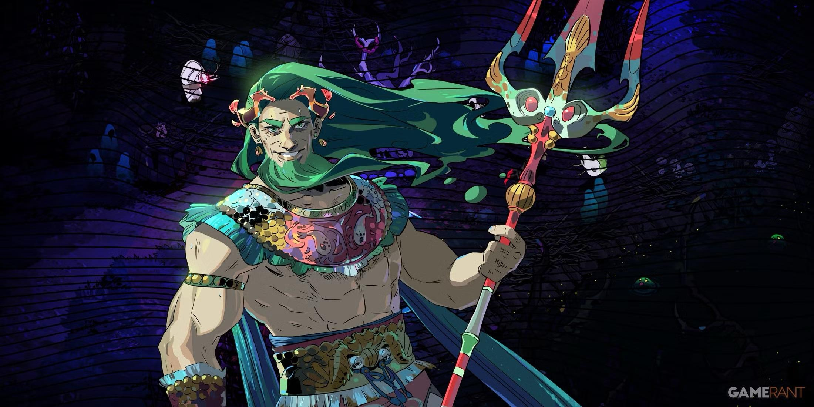
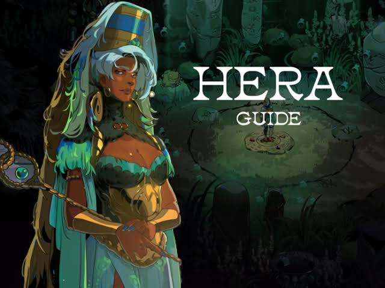
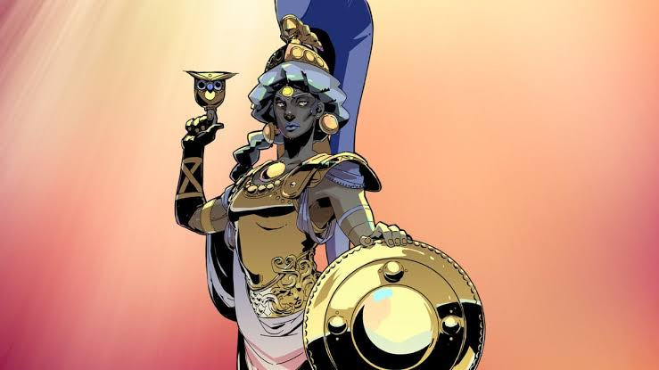

Mitologia - Curiosidades dos Mitos
Hades não era o Deus da morte!
Ele apenas governava o submundo, enquanto a morte em si era representada pelo deus Tânatos (ou Thanatos)! Hades é só o que manda nos mortos, a confusão ocorre por ambos estarem ligados ao fim da vida, mesmo com papéis bem diferentes.

Poseidon e os cavalos
Além de mandar nos mares, ele também era o deus dos terremotos e criou os cavalos. Isso se deve porque Os gregos antigos achavam que o barulho das ondas batendo na praia parecia o som de cascos de cavalos correndo, e as ondas similares a quando o cavalo está empinando.

O golpe de Hera
Hera, cansada das traições de Zeus, tentou dar lhe um golpe junto com Poseidon e Atena, que estavam cansados de sua tirania.Contudo, a nereida Tétis chamou o Hecatônquiro Briareu, que libertou Zeus, que amarrou Hera de ponta-cabeça no céu com bigornas nos pés e só a soltou depois que ela chorou tanto que prometeu nunca mais fazer isso... Corna não tem paz mesmo.

As Moiras
Apesar de poderoso, nem os deuses mais fortes podiam mudar o destino, que era controlado pelas três irmãs Moiras, filhas da Deusa primordial e personificação da noite, Nix. Sendo elas Cloto: A fiandeira que segurava a roca e puxava o fio da vida, marcando o nascimento; Láquesis: A distribuidora de sortes que geria o fio, medindo o comprimento e decidindo os momentos bons ou ruins de cada jornada; e Átropos: A implacável que carregava a tesoura e cortava o fio, determinando a hora exata da morte.

A briga da maçã de ouro
Tudo começou quando Éris, a deusa da discórdia, foi a única divindade não convidada para o casamento de Peleu e Tétis.. Ela foi de penetra e jogou uma maçã de ouro na mesa dos Deuses escrita "para a mais bela", onde três Deusas Hera (rainha dos deuses), Atena (deusa da sabedoria) e Afrodite (deusa do amor e da beleza) exigiram a posse da maçã por considerarem-se a dona legítima da beleza absoluta. Como Zeus não quis escolher para evitar uma guerra familiar no Olimpo, o jovem príncipe troiano Páris foi chamado para dar o veredito, e Cada deusa ofereceu um presente a Páris em troca do título: Hera ofereceu poder político; Atena, glória em batalhas; e Afrodite, o amor da mulher mais bela do mundo, Helena de Esparta (que era casada com Menelau, o rei de Esparta); Páris deu a maça a Afrodite, e a fuga/roubo de Helena ocasionou a guerra

Os nascimentos mais estranhos
Nascimento de Atena
Ela emergiu já adulta e completamente armada da cabeça de Zeus. O deus dos Deus havia consumado o ato com Métis, Métis, a deusa da prudência e da sabedoria; Pórem, Zeus foi avisado por Gaia e Urano que o filho gerado por Métis seria mais poderoso que o pai e o destronaria. Para previnir seu fim, o deus dos trovões engolira Métis, temendo a profecia. Mais tarde, Zeus começou a sentir dores de cabeça e recorreu até Hefesto que após um golpe de machado, deu a luz a Atena, a deusa da sabedoria, já adulta, vestida e dando um grito de guerra... Ah, e ela se tornou a filha favorita dele.

Nascimento de Afrodite
Em algumas versões, Afrodite nasceu da espuma do mar (aphros) após Cronos cortar os órgãos de Urano e jogar no oceano, também ja nascendo adulta.

Nascimento de Dionísio
Mas Atena não é a unica com um nascimento estranho! Seu irmão Dionísio, filho de Zeus e da mortal Sêmele, também! Enganada por Hera, Sêmele pediu para ver Zeus em sua verdadeira glória divina e foi incinerada com a visão. Zeus salvou o feto, costurou-o em sua coxa para terminar a gestação, tornando Dionísio o "nascido duas vezes"
.jpg)
Voltar ao inicio.